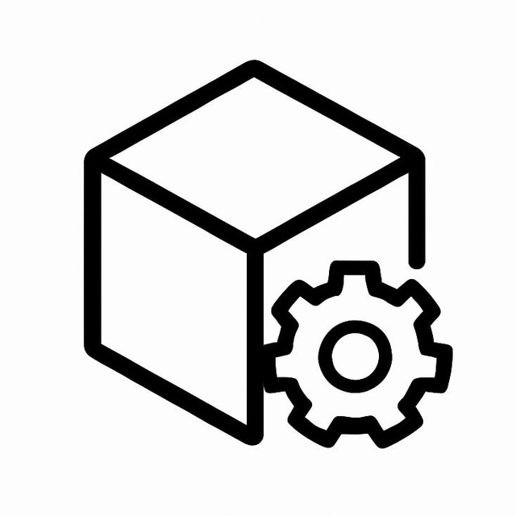

Мои проекты
DistanceTracker
Telegram-бот
Это мой первый завершённый проект — бот, позволяющий делиться геолокацией и считать расстояние между вами...

CreateModules[BETA]
Telegram-бот
Это проект для генерации модулей под юзерботов: выбираешь платформу, пишешь описание, и нейросеть создаёт файл...